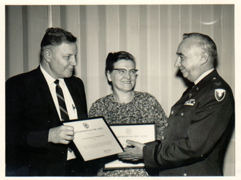
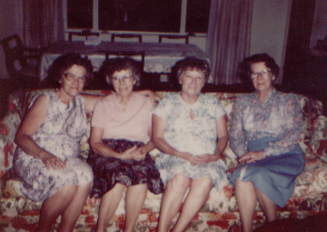

| Mattie Louise Revis was born 26 December 1904 in Buncombe Co., NC. She was the third of 8 children. On May 7th, 1923 she wed Robert Fortune, and together they had two children. Unfortunately Robert died in 1932 and Mattie was forced to raise the children herself. |
|
|

|
During WWII she saw her only son go off to war in the marines, but tragedy was not to strike him as it had his father and grandfather. She kept a journal of important sayings and also wrote poems which are treasured by her daughter to this day. |
| She lived on to see 5 grandchildren and 2 great-grandchildren, one of whom, Bradley, was old enough to remember her when she died. They all called her Nana. On 23 May 1983 cancer finally took her in the home of her daughter where she had been staying. She was interred in Moreland Memorial Park in Baltimore, MD. |

Mattie, Mayme, Mildred, and Maude |